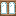
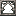
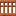

CREATE CODEX
机械动力图鉴
标签
源码
首页
/
全部物品
/
标签
/
无色玻璃
#
无色玻璃
forge:glass/colorless
用到它的配方
本站有
18
个物品的配方用这个标签作为材料。
工作台
14 个

丛林木窗户
×1
云杉木窗户
×1

华丽铁窗户
×1
工业铁窗户
×1
樱花木窗户
×1
橡木窗户
×1
深色橡木窗户
×1
白桦木窗户
×1
竹窗户
×1
红树木窗户
×1
绯红木窗户
×1
诡异木窗户
×1

金合欢木窗户
×1
锈蚀的工业铁窗户
×1
切石机
4 个
十字玻璃
×1
水平边框玻璃
×1
竖直边框玻璃
×1
边框玻璃
×1
标签成员
4
边框玻璃
水平边框玻璃
十字玻璃
竖直边框玻璃
返回标签索引